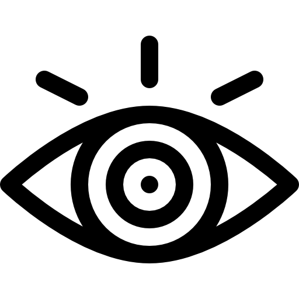

Sobre Nós
Somos uma plataforma dedicada a conectar clientes a assistências técnicas de confiança. Nosso objetivo é garantir que você encontre o serviço de qualidade que precisa.
A 1NOVATEK nasceu em 2024 de uma ideia simples, mas revolucionária, criada por três adolescentes com uma missão clara: transformar a maneira como assistências técnicas se conectam com os clientes.
Em um mundo cada vez mais digital, percebemos a necessidade de uma plataforma moderna, eficiente e acessível para facilitar esse encontro. Foi assim que nasceu a 1NOVATEK – a plataforma que une "tecnologia" e "simplicidade", oferecendo uma experiência única tanto para quem busca assistência quanto para quem oferece o serviço.
Nosso nome reflete nosso propósito:
- 1 representa o início de algo novo e inovador.
- NOVATEK vem de "inovação" e "tecnologia", dois pilares essenciais para o nosso trabalho.
Nosso objetivo principal é criar uma ponte digital entre consumidores e assistências técnicas, oferecendo uma vitrine online strong> para as melhores opções locais, facilitando a busca e garantindo que o processo seja rápido, seguro e transparente.
Missão, Visão e Valores
missão
Conectar usuários a assistências técnicas de qualidade, utilizando tecnologia para criar soluções simples, eficientes e transparentes. Nosso compromisso é oferecer a melhor experiência ao cliente e ao profissional de assistência, tornando essa jornada cada vez mais ágil e segura.
Visão

Ser a plataforma de referência para assistências técnicas no Brasil, proporcionando inovação contínua e garantindo que nossos usuários sempre encontrem soluções confiáveis perto de sua localização.
Valores
- Inovação: Estamos constantemente buscando maneiras de melhorar e inovar.
- Confiança: Nossa plataforma é construída sobre a confiança, garantindo que os profissionais listados sejam qualificados e que os usuários tenham uma experiência transparente.
- Simplicidade: Facilitamos o acesso a soluções técnicas com uma plataforma intuitiva e fácil de usar.
- Compromisso com o futuro: Queremos levar nossa plataforma para todo o Brasil, conectando ainda mais pessoas a assistências técnicas de confiança.